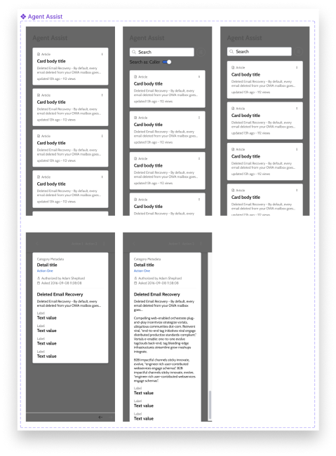
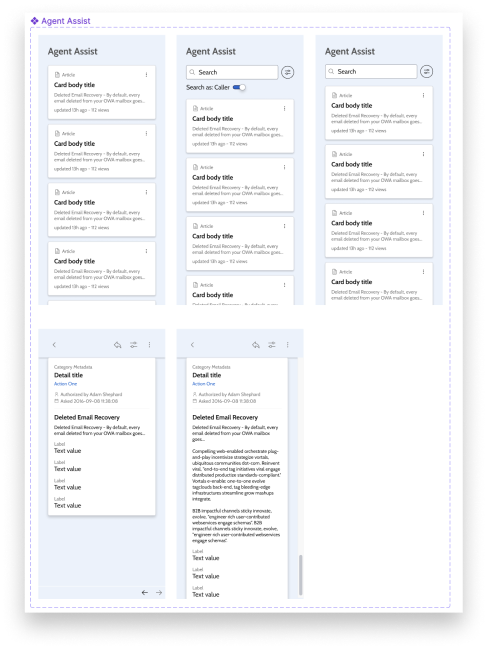
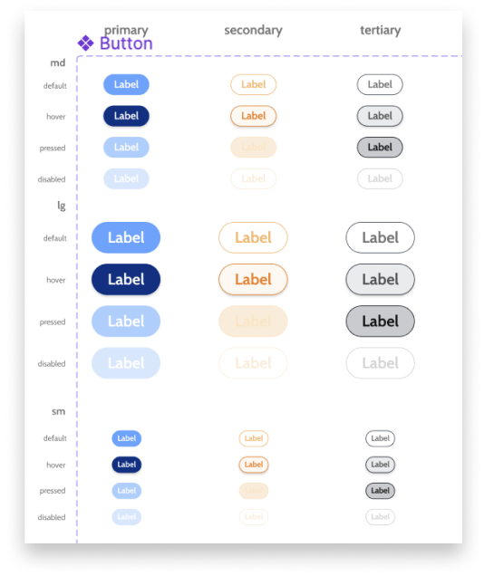
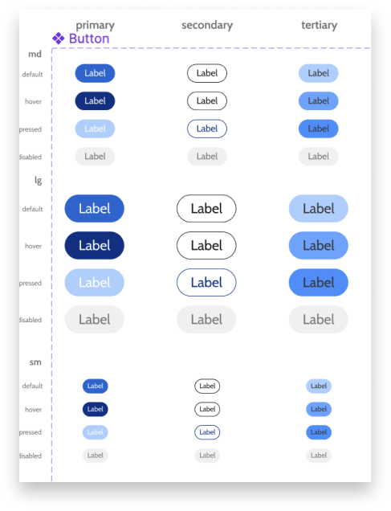
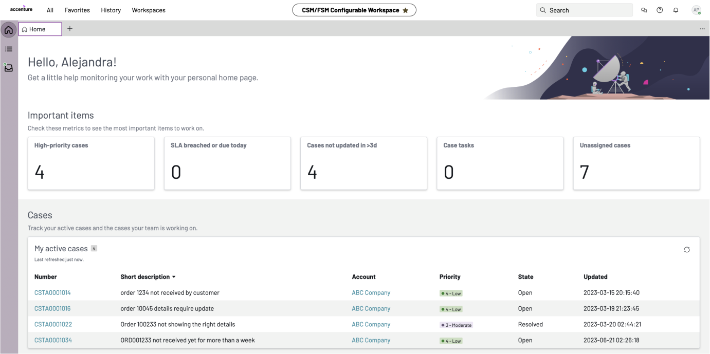
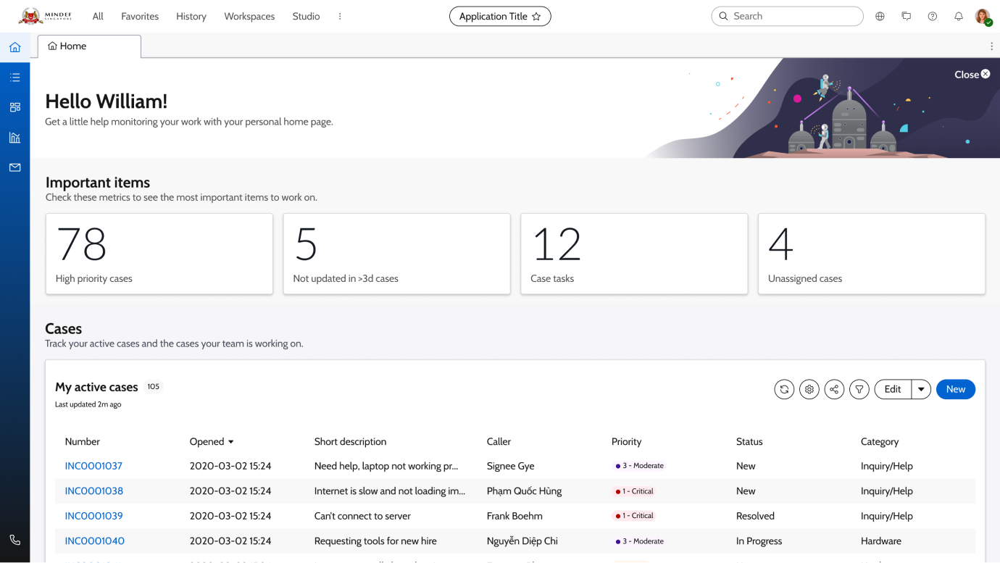
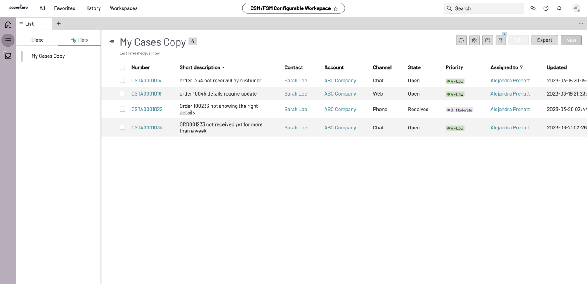
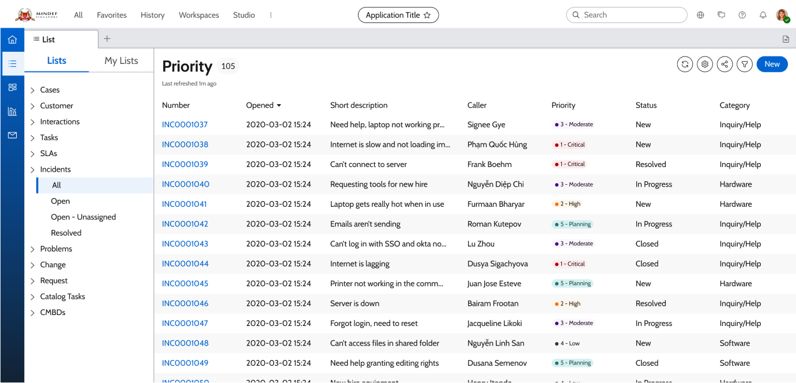

MINDEF
My Role
I worked with a team of designers to create a CRMS that for employee case management.
Duration:
6 months
Responsibilities:
UI/UX Design, Design Systems
The Project
An introduction of the client and our deliverablesHigh-level Summary
MINDEF is a Singapore Government Agency that is responsible for
overseeing the national defense in Singapore. They have over 250
employees, and serve all National Service men.
Accenture was hired to help MINDEF design and develop a new
Customer Relationship Management System (CRMS) that would
streamline their existing workflow, and improve the services
provided to their employees and NS men.
Our Deliverables
We had the following responsibilities:
My Role and Contributions
For this project, I took on a more collaborative role to align expectations and deliverables across the different teams. Some of my main responsibilities include:
- Client workshop planning and execution to find out about their pain points and vision for Senior Management Dashboard, synthesising the information and proposing potential solutions to effectively solve the client’s issues
- Managing and working closely with internal teams to understand the limitations of enterprise platform services, and balancing these limitations with the requests of the client
DLS Mapping
Modifying ServiceNow to fit our needsServiceNow x NS Hub
ServiceNow is the enterprise solutioning platform that MINDEF has
chosen to be used to streamline their processes. They offer many
services and solutions out of the box, and
the designers had to figure out what were the best features and
functionalities to be used that would be best suited for the
client's needs.
We also had to ensure that Service Now adhered to MINDEF's
existing Design Language System, NS Hub. As there is no
“one-size-fits-all” Design Language System, the team had to
evaluate the NS Hub DLS to better integrate it into the ServiceNow
Platform.
1 to 1 Mapping
To ensure optimisation to ServiceNow, we mapped 162 ServiceNow components with the NS Hub DLS. The design team evaluated components individually and manually re-assigned colours, adjusted typography, layout and spacings to suit the client's brand identity, while maintaing accessibility.
Before Adjustment
After Adjustment
Before Adjustment
After Adjustment
Key Screens
The design team also visualised several key screens to convey potential look and feel of the system. This has helped the client to make informed decisions when proceeding with the design directive given.
Before
After
Before
After
Design Direction
Converging on a new Zoff IdentityIngredient Boards
To help the client understand the evolving visual design
direction, we presented 3 different directions the brand could
take in the digital world. This would establish the overall mood,
direction and provide a set of high-level design principles that
serve as a starting point to develop the screens.
Each ingredient board contains components and elements that can
help differentiate Zoff from their competitors and promote a
unique brand identity Zoff can pursue.


Final Direction
We then evaluated the best design direction Zoff should pursue, which was to be a combination of the 2nd and 3rd explored Design Directions. With this in mind, the designers could then design and prototype the screens for the future e-commerce site of Zoff!

Prototyping
Some key screens I helped designAs part of the key deliverables of the project, the team had to create a high-fidelity, functional prototype to help the clients better envision the look and feel of Zoff's new digital identity! We created prototypes for both the desktop and mobile versions, incorporating our various Service Design concepts into the flows as well.
Landing Flow

Lenses Flow

Virtual Try On Flow

Staff Pick

Photo Try On